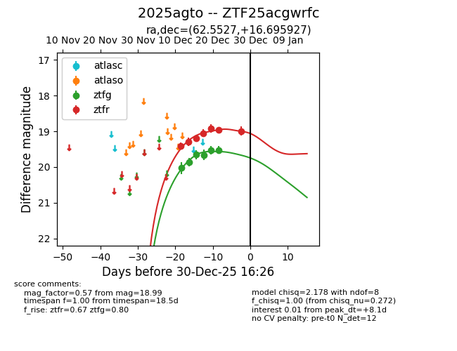
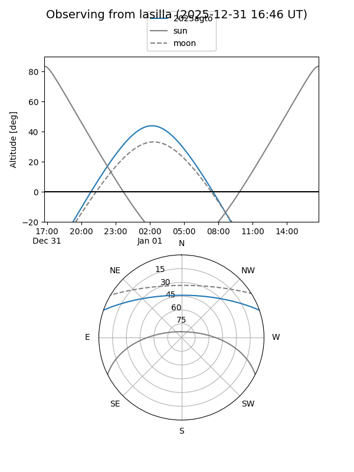
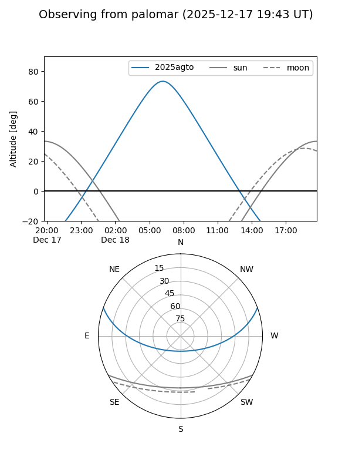
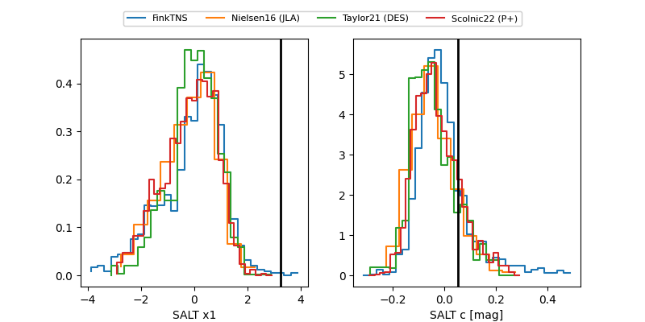

2025agto
Target 2025agto at 2025-12-30 16:29
Aliases and brokers:
FINK: fink-portal.org/ZTF25acgwrfc
Lasair: lasair-ztf.lsst.ac.uk/objects/ZTF25acgwrfc
ALeRCE: alerce.online/object/ZTF25acgwrfc
TNS: wis-tns.org/object/2025agto
YSE: ziggy.ucolick.org/yse/transient_detail/2025agto
alt names
ZTF25acgwrfc (ztf,fink_ztf)
2025agto (tns,yse)
Coordinates:
equatorial (ra, dec) = 62.5527,+16.69593
equatorial (HMS+DMS) = 04:10:12.65,+16:41:45.34
galactic (l, b) = (176.5477,-24.86265)
Flags:
Photometry:
last ztfg=19.52, ztfr=18.99
6 ztfg, 7 ztfr detections
Lightcurve

Visibility


Additional plots
